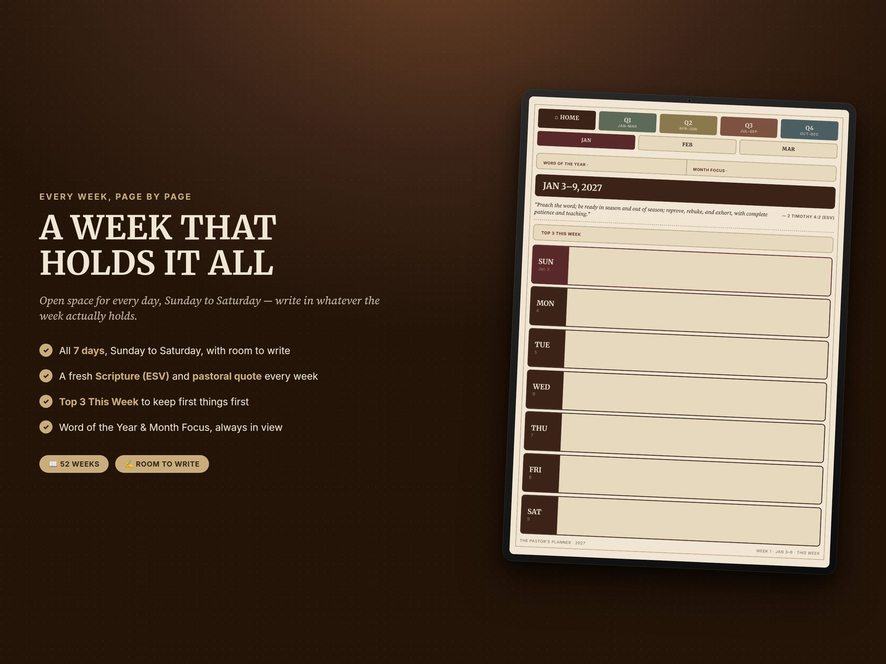
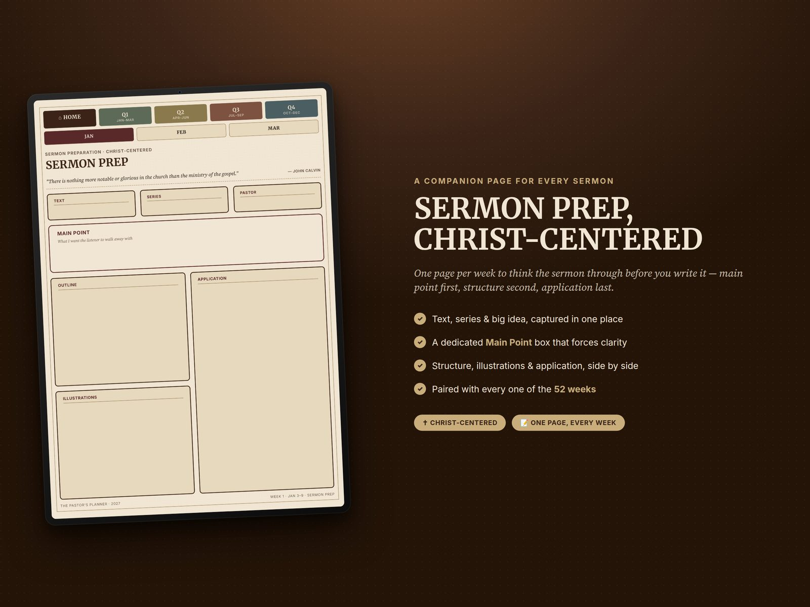
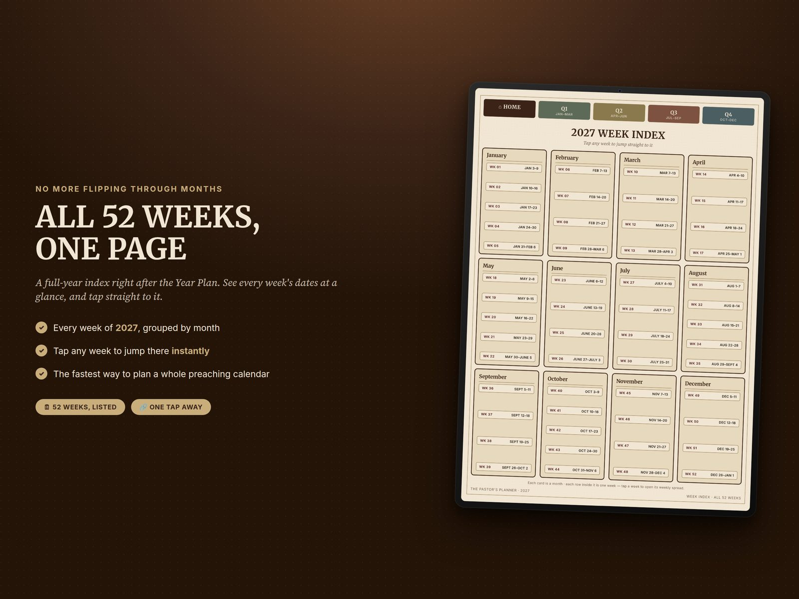
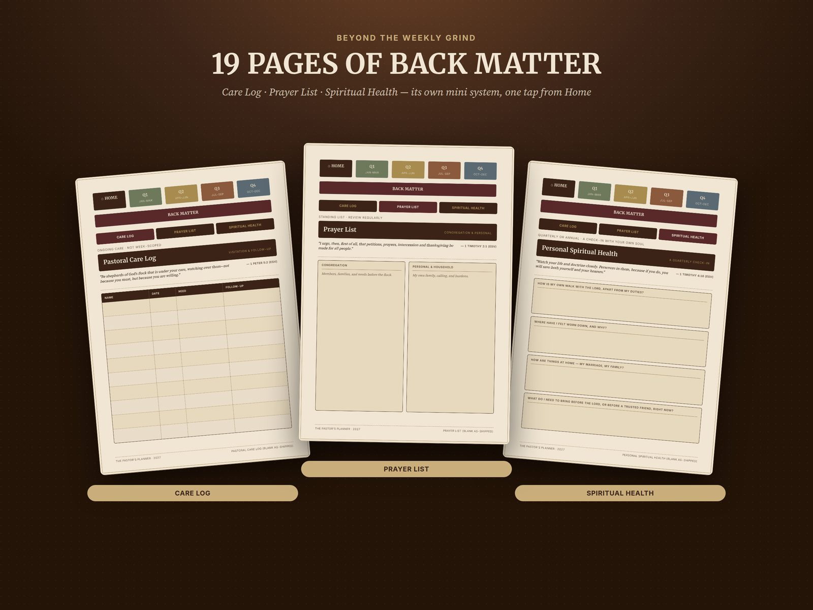
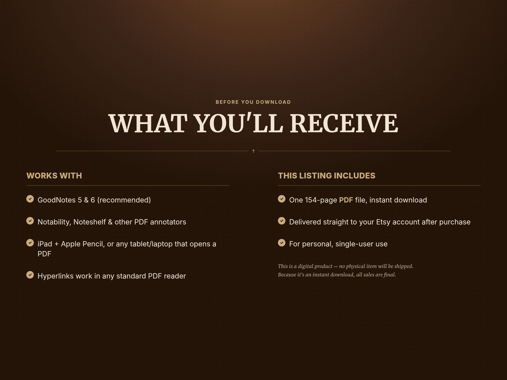

Why I made it
A pastor’s week does not run from nine to five. Sermon prep, hospital visits, an elders’ meeting, a phone call that turns into two hours, and your own time in the Word all compete for the same hours. Every planner I tried wanted me to keep those things in separate places. So I kept them in my head, which is the worst place to keep them.
I serve as a pastor at First Baptist Church of Wellston, and I also run a free biblical counseling ministry through Word and Hope. I know what it is like to finish a Tuesday and realize you never called the man you meant to call. So I built the planner I wanted for myself, and then I finished it well enough to share.
What it holds
The planner is a single PDF, 154 pages, dated for 2027. Here is what is inside.
- 52 weekly spreads. Each one has a Scripture verse, a Top 3 for the week, and room for the days, with a facing Sermon Prep page.
- Sermon Prep pages. Text, series, main point, outline, illustrations, and application, so you can start with a page that asks the right questions instead of a blank one.
- 12 monthly openers. A place to reflect, set your intentions, and track your preaching plan.
- An annual dashboard and year plan. Word of the Year, ministry goals, and six areas of life to keep an eye on: Word, Prayer, Flock, Family, Body, and Finances.
- A Pastoral Care Log. A running record of visits and follow-ups, so people do not slip through the cracks.
- A Standing Prayer List. For your congregation and for yourself.
- Quarterly spiritual health check-ins. A pause four times a year to ask how your own soul is doing.
- A Declaration of Calling and a Charge to Myself. Something to read on the weeks you are tempted to quit.

Sermon prep without the blank page
Most Sunday-night scrambles start the same way. There is a text, a deadline, and no idea where to begin. The Sermon Prep page sits across from each week and walks you through the text, the main point, the outline, and the application. It does not write the sermon for you. It makes sure you are asking the questions you would want to have asked by Saturday.

Two taps to any week
A planner you cannot move around in quickly will not get used. Every month, week, and section in this one is hyperlinked. From Home you can tap a month, then tap a week. A Week Index lists all 52 weeks on one page, and tabs on every page take you back to Home, to any quarter, or to the back matter. I tested the navigation in GoodNotes, Notability, Noteshelf, and Noteful.

A short look at the navigation in action.
Looking after the pastor too
Pastors are good at keeping track of everyone but themselves. The back of the planner holds a Pastoral Care Log, a Standing Prayer List, and a Personal Spiritual Health check-in for each quarter. These pages are one tap from Home, so they are easy to find on the days you need them.

“Keep a close watch on yourself and on the teaching. Persist in this, for by so doing you will save both yourself and your hearers.” 1 Timothy 4:16 (ESV)
That verse sits on the home page of the planner. I put it there because I need it.
See it in use
If you would rather watch than read, here is a walkthrough of the planner running in an actual app.

Get your copy
The Pastor’s Planner 2027 is an instant digital download, sold through my Etsy shop. You get one PDF, and you can import it into your app of choice and start using it right away.
If you have a question before you buy, write to matthew@wordandhope.com and I will answer it myself.
Questions
Which apps does it work in?
It is a standard PDF with internal hyperlinks. I tested it in GoodNotes, Notability, Noteshelf, and Noteful. It should also work in other apps that support internal links, such as Adobe Acrobat Reader, Apple Books, and Xodo, though how fast and smooth the navigation feels will vary by app.
Do I need an iPad?
No. An iPad with GoodNotes or Notability and an Apple Pencil is the setup I built it for, but any tablet or computer with a PDF app that handles links will work.
Can I print it?
It will print as a regular PDF, but I designed it for a screen. The links and the spacing are made for a tablet and a stylus.
Is it dated, or can I start mid-year?
It is dated for 2027, with 52 weekly spreads and a Week Index so you can jump to whichever week you are in.
What if I have trouble downloading it?
After you buy, your file is on Etsy’s Purchases page and in your confirmation email. If you are still stuck, message me through Etsy and I will send it to you directly.
Can I get a refund?
Because it is an instant digital download, all sales are final. If something is wrong with your file, write to me and I will make it right.